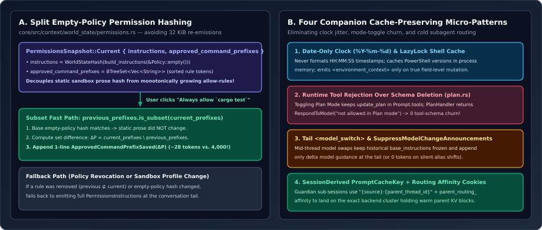

Cache-Preserving Micro-Patterns: Split Permission Hashing, Date-Only Clocks, Runtime Rejection & Shared PromptCacheKey
Even after adopting an append-only history architecture, subtle design choices—embedding approved command lists inside permission prose, formatting wall-clock seconds, hiding tools during Plan Mode, or spawning helper LLM reviewers on random load-balancer pods—still bleed thousands of uncached tokens per session. We examine five surgical micro-patterns across permissions.rs, environment.rs, plan.rs, model.rs, and client.rs that plug every leak.

codex-rs that eliminate permission-prose bloat, clock jitter, mode-toggle tool churn, model-switch prefix invalidation, and cold sub-session routing.1. Split Empty-Policy Permission Hashing (permissions.rs)
Consider what happens when a user approves $k$ command prefixes over an interactive coding session (e.g., cargo check, cargo clippy, pytest tests/unit). On Turn 1, PermissionsInstructions renders the full sandbox policy, writable root list, approval rules, and pre-approved command prefixes into a single developer block—easily $2{,}000\text{–}8{,}000$ tokens in complex workspaces.
If PermissionsState simply hashed the rendered PermissionsInstructions string as a single digest $H(\text{full\_text})$, every time the user clicked “Always allow prefix” in the TUI, $H(\text{full\_text})$ would change and re-append the entire multi-kilobyte block! Look at how PermissionsState::new and render_diff in core/src/context/world_state/permissions.rs (lines 52–130) factor the state space instead:
let build_instructions = |exec_policy| {
PermissionsInstructions::from_permission_profile(
permission_profile, approval_policy, approval_context, exec_policy,
cwd, paths, exec_permission_approvals_enabled, request_permissions_tool_enabled,
)
};
let instructions = build_instructions(exec_policy);
let instructions_without_approved_prefixes = build_instructions(&Policy::empty());
let snapshot = PermissionsSnapshot::Current {
instructions: WorldStateHash::from_fragment(&instructions_without_approved_prefixes),
approved_command_prefixes: exec_policy.get_allowed_prefixes().into_iter().collect(),
};Mathematically, let $I(E, P)$ denote the rendered permission instructions for environment profile $E$ and command prefix set $P$. Codex factors the state comparison into $(H(I(E, \varnothing)),\, P)$. On step $t$, if the base hash matches ($H(I(E_t, \varnothing)) = H(I(E_{t-1}, \varnothing))$) and prefixes grew monotonically ($P_{t-1} \subsetneq P_t$):
Instead of $4{,}000$ tokens of repeated sandbox boilerplate, Codex appends a ~28-token ApprovedCommandPrefixSaved notice listing only $\Delta P_t$—falling back to full PermissionsInstructions only when a prefix is revoked ($P_{t-1} \not\subseteq P_t$) or the underlying sandbox profile $E_t$ itself changes!
2. Date-Only %Y-%m-%d Clocks & Field-Level Environment Diffs
Injecting Current time: 2026-10-31T14:22:09Z into a prompt is a textbook anti-pattern: even inside a tail-appended fragment, formatting seconds or minutes forces a brand-new environment message on every single turn. In core/src/session/world_state.rs (lines 298–309), Codex reads the clock at day granularity only:
let current_date = if turn_context.config.include_environment_context_time {
self.read_clock_for_context(turn_context, "environment_date")
.await?
.map(|current_time| {
current_time
.with_timezone(&chrono::Local)
.format("%Y-%m-%d")
.to_string()
})
} else {
None
};Pair that with two more details in core/src/context/world_state/environment.rs (lines 29–31 and 148–202):
- Process-Wide Shell Version Memoization: Probing PowerShell’s version via subprocess on Windows/WSL adds latency on every step;
static POWERSHELL_VERSIONS: LazyLock<Mutex<BTreeMap<PathBuf, Option<String>>>>caches each binary’s version once per process lifetime. - Multi-Environment Diff Suppression:
EnvironmentsState::render_diffdiffs each environment ID’s(cwd, status, error, shell, is_primary)tuple plus(shell_version, current_date, timezone, network, filesystem). Across 50 consecutive bash commands in the same directory on the same calendar date,render_diffemits zero bytes.
3. Runtime Tool Rejection Over Schema Removal (plan.rs)
Codex exposes a built-in update_plan checklist tool for tracking execution steps, but explicitly forbids using update_plan while brainstorming in conversational Plan Mode. A naive engineer would filter update_plan out of Prompt.tools whenever turn.mode() == ModeKind::Plan. Look at what happens if a user toggles Default -> Plan -> Default:
- On standard Responses/Chat APIs, mutating top-level
Prompt.toolsinvalidates $100\%$ of the conversation KV cache twice! - Even under Responses Lite, removing and re-adding the schema emits unnecessary
RemovedToolsandAdditionalToolsdeltas on every toggle.
Instead, PlanHandler (core/src/tools/handlers/plan.rs, lines 87–91) leaves the tool schema untouched and rejects disallowed invocations in 4 lines of Rust:
if turn.mode() == ModeKind::Plan {
return Err(FunctionCallError::RespondToModel(
"update_plan is a TODO/checklist tool and is not allowed in Plan mode".to_string(),
));
}Combined with a one-sentence warning in plan.md (“If you try to use update_plan in Plan mode, it will return an error”), the model almost never calls it—and toggling Plan Mode costs zero schema churn.
4. Tail <model_switch> & Sub-Session Cluster Affinity
Two final cross-request patterns in model.rs and client.rs preserve KV caches across model switches and sub-sessions:
| Scenario | Naive Failure Mode | Codex Source Mechanism |
|---|---|---|
| Mid-thread model or effort change | Replacing base_instructions at index 0 invalidates prefix tokens on compatible backends or breaks WebSocket state. | ModelInstructionsState::render_diff (model.rs:119-142) preserves prior history, checks suppress_model_change_announcements, and appends ModelSwitchInstructions at the tail. |
| Guardian reviewer sub-session | Fresh UUID session_id hashes to a random inference cluster whose radix cache is completely cold on the parent’s 60k-token transcript! | session_derived_cache_key (client.rs:723-727) sets "{source}:{parent_thread_id}" AND copies responses_metadata.parent_routing_affinity (client.rs:1807-1811) onto the WebSocket dialer. |
That second row is a gem of distributed inference engineering: because Guardian’s evaluation prompt shares a common prefix (or session routing domain) with the parent session, propagating both PromptCacheKey::SessionDerived and ChatGptRoutingAffinity cookies steers the safety reviewer’s TCP/WebSocket connection to the exact same backend worker pool—turning what would be a cold $50{,}000$-token safety-review prefill into a warm cache hit.
5. Questions worth answering
PermissionsState fall back to re-emitting the full PermissionsInstructions if a previously approved prefix is removed, instead of emitting a 1-line “prefix revoked” notice?Security asymmetry: when granting a new prefix ($P_{t-1} \subset P_t$), a short additive notice is purely capability-expanding and safe even if the model skims earlier text. When tightening permissions ($P_{t-1} \not\subseteq P_t$), restating the authoritative complete permission specification prevents the model from relying on stale permissive language earlier in the context window.
client.rs:735 use metadata.session_id instead of session_derived_cache_key in the session-id header when is_non_root_agent() is true?Read the comment at lines 732–739 of client.rs: spawned worker/explorer subagents have independent long-lived turn lifecycles, telemetry hooks, and rollout histories that must remain keyed to their own session_id, whereas ephemeral internal helper calls (SessionSource::Internal, such as Guardian) share the parent thread’s cache affinity.